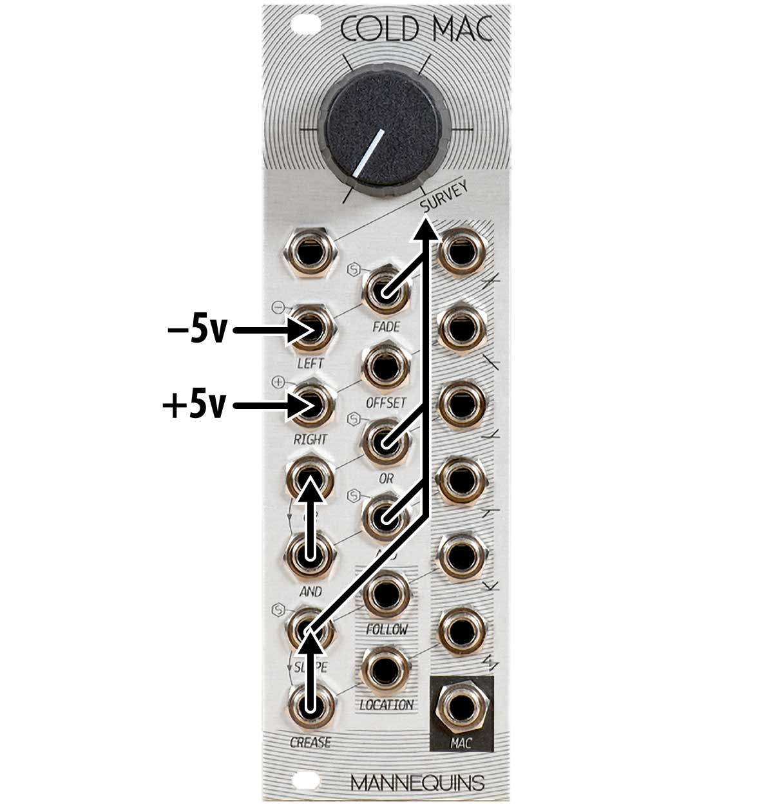

Patching Cold Mac
Martin Doudoroff
This document is an attempt to understand the Cold Mac utility module for Eurorack synthesizers, designed and manufactured by Whimsical Raps. Please note: this is an unofficial, customer-generated document and may contain errors. The author will attempt to correct any errors as he becomes aware of them.
Note: In mid-2019, Whimsical Raps produced a remarkable new set of documentation for their modules, including a new guide for Cold Mac. You may still find my guide, below, to be helpful, and mine may be an easier-to-digest introduction, particularly with the video. But please don’t miss out on the new official documentation, which you can find here: PDF and web. Lots of great stuff in there.
A companion video is now available. The video is supplemental to this document—you may wish to watch it before or after reading further, or refer back to parts of the video, later.
Contents
- Functional Blocks of Cold Mac
- Nomenclature
- The big knob and its cv
- Panning/Crossfading
- Signal Inversion and Offset
- Analog Logic
- Logical Mixing
- Full Rectification
- Envelope follower
- Crease
- Location
- Straight Audio Unity Mix
- Cold Mac as a System
- Additional Videos
- Review
- Revision History
Functional Blocks of Cold Mac
In this document, we’re going to first break the module down from top to bottom, and examine each functional block (circuit) in isolation. Later, we’ll step back and look at the holistic side of Cold Mac.
Nomenclature
The faceplate of Cold Mac contains a whopping 20 jacks. This document refers to each jack by its label in capital letters (e.g., SLOPE). Alas, a number of the jacks are labeled redundantly or with pictograms that don’t translate readily to words, so, taking a syntactic cue from the official documentation, we’ve adopted these names for those jacks:
Note: if your faceplate doesn’t quite match this one, then you have one of the earliest units. The early units erroneously implied that AND(2) was normaled to OR(2). Moreover, the newer faceplate adds various helpful markings to indicated where SURVEY and the ±5v offsets are normaled.
SURVEYThe big knob and its cv
At the top of the module is the knob and associated SURVEY cv input. The knob generates roughly ±5v, with 0v at noon. Whatever voltage (positive or negative) you apply at the SURVEY jack is added to whatever the knob is set to. The SURVEY jack will happily accept cv or audio (for audio-rate modulation). There’s no direct output for this sum, but you have nothing patched to LEFT and test the voltage at LEFT(OUT), the floor and ceiling seems to be around -5v and +6v, respectively.
LEFT/RIGHTPanning/Crossfading signals (audio or CV)
The first pair of rows of jacks presents a crossfading circuit. These work for CV or audio. At its simplest:
- Whatever you patch to LEFT will be panned from LEFT(OUT) to RIGHT(OUT), according to the signal patched to FADE (±5v).
- Whatever you patch to RIGHT will be panned from RIGHT(OUT) to LEFT(OUT), according to the signal patched to FADE (±5v).
FADE will happily accept cv or audio (for audio rate modulation).
If you patch nothing to FADE, then the pan position is determined by SURVEY, to which FADE is normaled.
In this manner, you can:
1. pan a single signal between LEFT(OUT) and RIGHT(OUT) using one input and both outputs as a stereo pair
2. crossfade from one signal to the other (use both inputs and one or the other output)
3. pan two signals between left and right as a stereo pair (use both inputs and both outputs)
4. fade a single signal in and out, like a simple VCA (select inputs and outputs for desired behavior, break normal of unused input—see below)
Important wrinkle: As implied by the panel graphics, LEFT is normaled to -5v and RIGHT is normaled to +5v. If you’re only using the LEFT or RIGHT input, then you’re not crossfading/panning/attenuating against 0v! In these situations, you probably want to insert a dummy cable into the unused jack to break that normal. This fact is often inconvenient, but the designer felt these normalized offsets were essential for some of the other use cases of the module.
The range of FADE is ±5v, so zero volts will be the middle “pan position”. Note: if you overdrive FADE with positive voltage (e.g., +10v), you may observe some waveshaping.
Finally, anything (cv or audio) you patch to OFFSET will be summed with whatever is heading to both LEFT(OUT) and RIGHT(OUT). Note OFFSET does not participate in MAC circuit (explained below).
Arguably, the existing faceplate graphics are misleading: they imply that FADE pertains to the LEFT circuit and OFFSET pertains to the RIGHT circuit. Rather, FADE and OFFSET affect both LEFT and RIGHT circuits as described here.
Here are graphs that illustrate the behavior of these circuits as if you were working with a sine wave as an input signal and relying on FADE’s normalization to SURVEY:
LEFT/RIGHTSignal Inversion and Offset
If you put a signal into FADE (with no signal in LEFT or RIGHT), an inverted copy will be available from the RIGHT(OUT).
However, keep in mind that what you’re actually doing here is using your signal to attenuate the +5v normaled to RIGHT. If you’re working with a hotter signal that you want to invert, and you want to preserve more amplitude, you’ll need to patch a hotter constant voltage into RIGHT (e.g., 10v from MATHS channel 2).
Alternatively, if you put your signal into SURVEY instead of FADE, you can use the knob to add positive or negative offset.
Tip: if you want an inverted copy of a signal—such as a gate stream—but you want it in the positive voltage domain (0-5v), use these same patch approaches, but insert a dummy cable in LEFT to defeat the -5V offset. Voila!.
AND/ORCombining signals with analog logic
The next pair of rows of jacks is a straightforward implementatation of analog logic circuits. They work for CV or audio.
At its simplest, if you patch two signals into OR(1) and OR(2), you get the highest (peak/maximum) of the two signals at any one time from OR(OUT).
If you patch two signals into AND(1) and AND(2), you get the lowest (trough/minumum) of the two signals at any one time from AND(OUT).
Entire Eurorack modules exist that do nothing but this, and herein are various useful techniques for deriving a new signal from two different signals at either cv or audio rates.
Note the lines and arrows on the panel graphics: AND(1) is normaled to OR(1), so by patching into OR(1), the same signal can be processed by both the OR and AND circuits—you don’t need a mult. Inserting a cable into AND(1) breaks that normal.
AND/ORHalf-recification and wave slicing
Moreover, OR(2) and AND(2) are each normaled to SURVEY, which means that if you don’t patch something to those jacks, then the position of SURVEY is the voltage value (±5v) that OR(1) and AND(1) will be compared to, respectively. So, if you patch a signal into OR(1) and nothing into OR(2), then SURVEY sets a floor for the voltage and sends the result out of OR(OUT). If you patch a signal into AND(1)—or inherit the signal from OR(1)—and patch nothing into AND(2), then SURVEY effectively sets a ceiling for the voltage and sends that result out of AND(OUT). Another way of looking at this normalization is that patching CV into the OR(2) or AND(2) input will decouple these circuits from SURVEY (using the CV input), freeing up SURVEY for other purposes.
If you leave SURVEY at noon, OR(2) and AND(2) unpatched, and connect and audio or cv signal to OR(1), then you’ll get positive and negative half-rectified signal out of OR(OUT) and AND(OUT). That constant zero volts from SURVEY acts as the split point. You can then adjust SURVEY to raise or lower that split point—or better yet, patch fluctuating cv to SURVEY and animate the split point. Or patch two different fluctuating cv signals to OR(2) and AND(2) to separately animate the split point. Various terrific wave shaping techniques herein, even in stereo (if you treat OR(OUT) and AND(OUT) as a stereo pair.
Here are graphs illustrating the OR and AND circuits as if you were working with a sine wave as input and relying on the normalization of OR(2) and AND(2) to SURVEY instead of inserting your own second signal(s):
AND/ORLogical mixing (audio or CV)
Moreover again, if you patch two different signals simultaneously into OR(1) and AND(1), then take both outputs and mix them back together downstream, you achieve what the official documentation terms “logical crossfading” with “spectral connotations”.
As you sweep SURVEY from left to right, you’re simultaneously raising the floor of first signal until its highest frequencies wink out, while lowering the floor of the second signal from nothing until the full spectrum is passed. With audio, the result sounds different from a conventional crossfade.
SLOPEFull Rectification
Patching audio or CV into SLOPE, you get a fully rectified copy of the input signal from SLOPE(OUT). Any portion of the signal that was negative voltage is now postive voltage.
This graph illustrates what the SLOPE circuit does to a sine wave:
Another way to think of it: full rectification takes any input voltage (positive or negative) and returns the amplitude (magnitude) of that voltage. In mathenmatical terms, the absolute value of the voltage.
Note that SLOPE is normaled to SURVEY, so if nothing is patched to SLOPE, the offset voltage from SURVEY will be processed by the rectifier.
SLOPEEnvelope follower
Patching audio or CV into SLOPE will yield a slewed voltage out of FOLLOW that chases the amplitude of the signal at SLOPE. (This is a slewed version of the rectified signal, so you will only see positive voltages from FOLLOW.) The slew rate of this envelope follower is fixed, and the circuit is—according to the official documentation—based on the ARP 2600’s envelope follower.
FOLLOW is ostensibly useful for deriving the CV for a sidechain patch. However, it may slew too slowly for ducking around percussion hits—your mileage may vary. (Fully-featured envelope follower modules and parametric slews, such as Make Noise Maths, offer more flexibility). In any case, FOLLOW is nice to have and can be handy as a simple slew or envelope follower. Also, if you ping SLOPE with a trigger, you’ll get a simple envelope out of FOLLOW.
Note that SLOPE is normaled to SURVEY, so if nothing is patched to SLOPE, the offset voltage from SURVEY will be processed by the FOLLOW circuit. Indeed, one of the stated intentions for the FOLLOW circuit is to provide a “time variant” of SURVEY for patch surveillance (below).
CREASECrease
Patching CV or audio to CREASE will yield a flipped/wavefolded/creased copy of the signal at CREASE(OUT). In effect, the crease circuit translates the positive portion of the signal into the negative domain, and the negative portion of the signal into the positive one, introducing a discontinuity where the source crosses zero volts. Low amplitudes become high, high amplitudes become low. With audio, generally speaking, lower amplitude sources will emerge with more harmonics, and higher amplitude sources less. There’s no particular precedent I know of for the utility of this transform function, but it provides an additional variation on a CV signal or an additional timbre to an audio signal.
This graph illustrates what the crease circuit does to a sine wave:
Note that because CREASE is normaled to SLOPE, and SLOPE is normaled to SURVEY, with nothing patched to either SLOPE or CREASE, the offset voltage from SURVEY will be processed by the crease circuit.
LOCATIONLocation
Patching CV into CREASE (audio won’t generally work here) you will produce a voltage from LOCATION that rises or falls at a rate proportional to the magnitude of the input voltage (relative to 0v).
LOCATION is a curious integrator circuit. More or less, you steer its voltage up and down by applying positive or negative voltage at CREASE. It’s a bit like the steering wheel of a car, or perhaps more like the rudder of a boat: the higher the voltage (negative or positive) you apply, the faster LOCATION changes. When you apply zero volts, LOCATION stops changing.
Note that because CREASE is normaled to SLOPE, and SLOPE is normaled to SURVEY, with nothing patched to either SLOPE or CREASE, the offset voltage from SURVEY will be processed by the location integrator. Indeed, one of the stated intentions for the LOCATION circuit is to provide a “time variant” of SURVEY for patch surveillance (below).
The maximum range of LOCATION seems to be about ±4.5v, but the actual range depends a bit on the CV you input. For example, if you hit it with ±5v, you’ll only see about a ±4.2v range from LOCATION. If you hit it with ±10v, you’ll see ±4.5v. Even with high voltage swings at the CREASE input, this integrator moves at a somewhat leisurely pace. For it to do much of interest, you generally need to be applying bipolar CV at CREASE, otherwise LOCATION will simply drift up and mostly stay there (although there may be some one-shot creative application for this). Moreover, if the CV you apply at CREASE is modulating in a more or less evenly balanced way between positive and negative (such as a typical LFO), then it’s going to even out at LOCATION and you might get something like a flatline. So, to creatively employ LOCATION, you probably need one of two things as a CV input:
- a CV source that is normally sits at zero volts but sometimes goes positive or negative like steering corrections to a vehicle; a joystick could be one example, but the Survey knob itself is the most obvious
- a CV source that drifts up and down arbitrarily, at an average slow pace; pitch data on a relatively long sequence might do this.
In any case, the actual result from LOCATION depends a great deal on the relative speed of the fluctuating input CV and the fixed rate behavior of the LOCATION integrator.
MACStraight Audio Unity Mix + VCA
Further complicating the picture, there’s an entire other layer happening within Cold Mac: copies of the signal at the six left input jacks (not including SURVEY) are summed together (unity mix) in a separate circuit. That sum is then attenuated in a linear VCA according to SURVEY, and the results output from MAC. So, regardless of whatever else Cold Mac is doing, it also acts a lot like a VCA with a unity mix on the front end.
The rest of the jacks have no effect on MAC.
Important detail #1: the signals at OR(1) and SLOPE (marked * in the illustration) will receive 2X gain within the MAC circuit if the normalization of the AND(1) and CREASE jacks are not respectively broken. One implication is that you can use Cold Mac to modestly amplify one audio signal (or two, if you don’t mind them getting mixed together). Again, this extra gain is only present at the MAC output, not at the OR(OUT) or SLOPE(OUT) outputs.
Important detail #2: This MAC circuit is AC coupled, so it doesn’t pass control voltage. However, if you are also running control voltage into any of those six inputs, it may well manifest as DC offset in the MAC signal and cause you grief down the line. Moreover, if there are discontinuities in such control voltage, they may manifest as clicks in the audio signal coming from MAC. In other words, you cannot simultaneously use Cold Mac as an audio VCA and process a bunch of CV with complete impunity. Your mileage may vary.
Cold Mac as a System
Now that we’ve looked at Cold Mac’s circuits in isolation, let us step back and take in the module as a system, which is where Cold Mac derives much of its mystique.
Normalized connections
A big part of what makes Cold Mac a system is the network of normalized connections behind the faceplate. We’ve discussed them all, already, but let’s review them as a whole:
- FADE, OR(2), AND(2) and SLOPE are each normaled to SURVEY.
- CREASE is normaled to SLOPE [which is normaled to SURVEY]
- LEFT is normaled to -5v
- RIGHT is normaled to +5v
- AND(1) is normaled to OR(1)
So, by default, SURVEY has influence on every circuit in Cold Mac. As discussed above, that influence can be decoupled from (overridden in) any circuit in Cold Mac by breaking a normal (except for MAC).
Standalone CV output
With no external inputs, each of the outputs (except MAC) emits CV according to the position of SURVEY as indicated by the little graphs by the jacks.
Indeed, if you set the knob to noon and patch any basic bipolar LFO (or any other wave shape) into the SURVEY jack, you’ll derive eight distinct LFO responses from the eight outputs that are potentially useful. (thanks Sunden)
You can certainly use this default CV output directly, or you can break one or more of the normalizations in one or more of the inputs, substituting your own modulation sources. You can also layer in some self-patching between Cold Mac outputs and inputs, and thereby erect a more complex web of signal processing.
Patch Surveillance
Whimsical Raps’ concept of “patch surveillance” is that a whole bunch of parallel CV and/or audio can be processed through Cold Mac under the concurrent modulation of the sweep (or CV) of SURVEY. The number of possibilities are initially overwhelming, particularly when you factor in self-patching, but once you internalize the behavior of the individual circuits, your intuition can guide experimentation.
Below is an attempt to summarize what you need to internalize for the purpose of patch surveillance. The voltage in brackets is what you get if the only input to the circuit is SURVEY itself.
Regarding SLOPE, CREASE, FOLLOW and LOCATION: from the basic patch surveillance perspective, their use implies that nothing is patched into the SLOPE or CREASE inputs, because doing so cuts those circuits off from SURVEY.
Don’t forget:
- patch surveillance can be all about cv, all about audio, or a bit of both
- parts of Cold Mac can be used for patch surveillance while others are simply processing signals (break those normals).
- SURVEY has a cv input: you can bring in external (or self-patched) cv to animate SURVEY and still use the knob to inject offset
Tip: alas, there’s no auxiliary output for SURVEY, but if you aren’t using LEFT and RIGHT, then you can take the LEFT output, mix that with other signals externally, and then bring that signal back to any of the Cold Mac circuits, potentially even the SURVEY input itself.
Example 1
First, you might have a simple oscillator (running at audio frequencies) that outputs a few standard wave shapes. You might patch the triangle wave to LEFT and the square wave to RIGHT, and then patch the LEFT(OUT) to your filter. In this manner, SURVEY will crossfade between the two waveforms en route to your filter, moving smoothly from a drone of little harmonic content (the triangle wave) to a drone with a great deal of harmonic content (the square wave).
Next, you might have a sine wave LFO patched into OR, with the AND(OUT) patched to the FM input of your filter. In this manner, as SURVEY increases, the filter cutoff opens up more, and concurrently, more cutoff animation from the LFO is introduced. At the clockwise extreme of SURVEY, you’ve got a pure square wave (from above) being filtered by a constantly fluctuating cutoff frequency for a lot of constant timbre animation. As SURVEY decreases (counter-clockwise), the filter closes down more and fluctuates less until you’re back down to a simple triangle wave drone.
Next, you might patch a slow sample-and-hold random cv to SLOPE, and take the FOLLOW output to the 1v/o input on your oscillator, causing the pitch of the oscillator to glide up and down randomly.
The patch described above looks something roughly like this:
Now, as your synthesizer drones, you could play with the SURVEY knob (or apply CV to it) to increase or decrease the overall intensity and animation of the voice, while the slew limiter circuit of Cold Mac controls the pitch of the oscillator (independent of SURVEY). It might sound something like this (slowly sweeping SURVEY fully clockwise and all the way back again):
By itself, this example isn’t all that interesting, but it hopefully serves to illustrate the concept of “patch surveillance”.
Example 2
Additional Videos
Here is a collection of videos from other parties that you may find helpful. I will add others as I become aware of them.
Patching Cold Mac #1 by endor:
Whimsical Raps’ COLD MAC: An Introduction:
Whimsical Raps’ COLD MAC: Patch Surveillance:
Modular Patch Walkthrough 01 by Nathan Moody: (this video is about a lot more than Cold Mac, but effectively demonstrates its integration into a larger patch)
Review (opinions)
Like Make Noise Maths, Cold Mac has developed a mystique based on its initial inscrutability. Also like Maths, once you dig into it, Cold Mac does nothing that’s really all that remarkable: it is just a bunch of basic utility circuits. There’s probably no single task that Cold Mac does “better” than any more-focused utility module would. However, that’s not the full story, and I think there are three big features that make Cold Mac unique:
1. sheer density
Cold Mac is maybe 3 or 4 utility modules collapsed into 8HP. Because of this, Cold Mac could be particularly attractive for small systems, and it probably was conceived with a small system in mind, since that’s what designer Trent Gil seems to himself favor. Cold Mac represents a lot of functionality for the money and space.
2. lower-level functional design
Most Eurorack utility modules are designed with a primary use-case foremost in mind—a design bias—that the panel layout and graphics strongly reflects, and therefore basic operation is usually somewhat obvious and intuitive, even if there are additional, secondary ways to employ the module. For example, a cross-fader module is perhaps labeled as such, has two primary inputs, one primary output and a knob for setting the mix.
Cold Mac has no such use-case bias, which is why it’s not even remotely evident what the module does simply by looking at it. Put another way, Cold Mac is not a cross fader module per se, but it offers a collection of circuits, some of which can be used to create a cross fader (or other things) if you understand them and use them accordingly. One term for this approach is patch programming, a modular philosphopy strongly associated with Serge synthesizers.
3. the survey knob and cv
Even when packaged together, most utility circuits come with their own controls; with Cold Mac, there’s only one shared control that is built-in. Imagine having 3-4 more typical utility modules, but with rubber bands connecting their knobs so that when you turn one, they all turn; that’s a bit like how Cold Mac works by default. This unusual approach might seem a limitation if you’re thinking about functions in isolation, but it has potential as a macro control to simultaneously introduce or shift the animation of different strands of your patch as they pass through Cold Mac. This macro control is what Whimsical Raps calls patch surveillance, hence the “Survey knob”.
That said, let’s not over-romanticize or get hung up on the Survey knob: it’s nothing but a simple bi-polar offset generator to which many parts of Cold Mac are normaled. Just because the Survey offset control is there doesn’t mean you must use it, and often you won’t.
There’s no question that having access to an oscilloscope makes Cold Mac easier to learn. If the Cold Mac design was ever revisited, the addition of two-color LEDs that could give the user a hint about the bipolar voltages at the inputs and outputs would be immensely helpful, although it would probably force the module to grow in size and cost.
Some other “improvements” that might be worth at least contemplating would be an auxilliary output for SURVEY, more control over the FOLLOW circuit, and additional normalizations to exclude inputs from the MAC circuit when their main outputs are in use.
In summary, Cold Mac is about patch programming, and arguably, it out-Serges Serge in that respect. Cold Mac requires commitment: memorize how each bit affects your signals, master the normalizations, and integrate it all into your process. As a whole greater than the sum of its parts, Cold Mac might be truly delightful to some folks, while others will run away screaming. Either way, you’re not wrong.
Revision History
Revision history:
2022-04-18 Errata
2018-12-21 Added new Elements companion video
2018-12-18 Corrections
2018-12-03 Massive 2.0 rewrite
2018-10-13 Added overview and various other corrections and amplifications
2018-08-01 Added Nathan Moody’s helpful Modular Patch Walkthrough 01 video (see bottom of page)
2016-02-22 Added draft section on signal inversion and offset
2015-10-04 Added video links section, table of contents
2015-09-24 LFO CV visualization and clarification re: normals
2015-09-23 correction
2015-09-22 nomenclature section & edits
2015-09-21 corrections, normalized connections summary & logical crossfade
2015-09-20 first draft
• • •